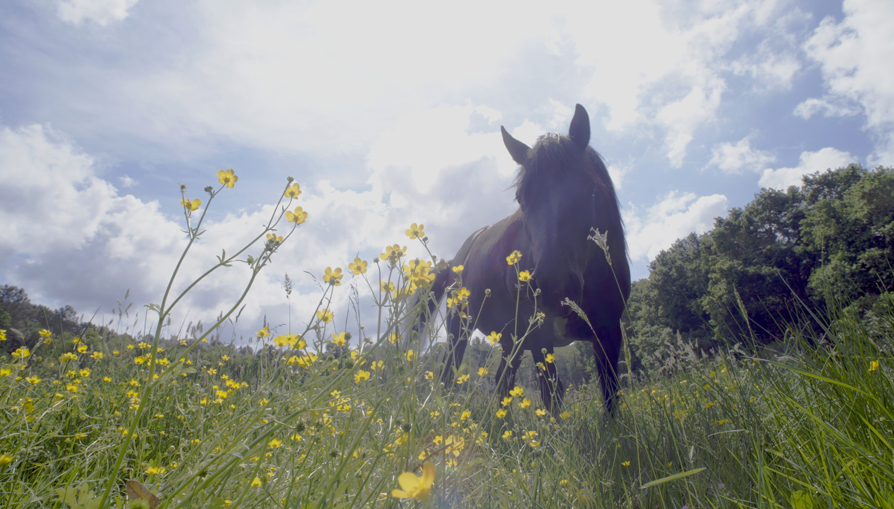

Première visite technique : état des lieux
Mare, haies de tamaris, accès : nos premiers relevés confirment le potentiel du site pour une gestion écologique à échelle humaine.
Nouvelles du terrain, étapes du projet, photos et rencontres. Pour rester informé·e et suivre la progression de la renaissance des marais du Médoc.
Mare, haies de tamaris, accès : nos premiers relevés confirment le potentiel du site pour une gestion écologique à échelle humaine.

Rustique, docile et adapté aux zones humides, il peut entretenir la végétation tout en favorisant la biodiversité.

De la reprise des contacts institutionnels à la mise en place des premiers suivis, voici les jalons de notre année.
Terrain • Vidéo
Le 21 mai 2025, Jalle, une ponette landaise de 5 ans, première étape du projet d’élevage de Laurie Jayet, a été transférée.
Elle a quitté les marais de Bruges pour rejoindre la ferme équestre de Naujac où Laurie s’occupe déjà de 8 chevaux.
Jalle y vivra en attendant que le projet Printemps des Marais à Talais puisse lui offrir un espace dédié et adapté à ses besoins.